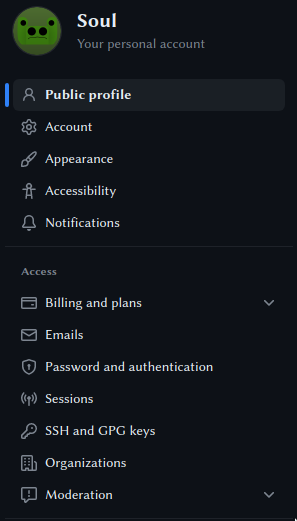

Creating Your Own Static Site With Github Pages
It's relatively simple to get setup with your own website with Github Pages.
1. Prerequisites
- Install git(https://git-scm.com/downloads)
- Create a github account(https://github.com/)
- Optional:
- Install gitKraken(https://www.gitkraken.com/) as a nice to have interface over git
- Install VSCode(https://code.visualstudio.com/) for editing HTML, CSS, and site templates
2. Setting Up Git
Git allows you to track changes to your files and push those changes to remote hosts, github in this case.
2.1. Generating your ssh key
In order for you to push, you'll first need to create an SSH key and attach it to your github account1
In a terminal, run the following:
ssh-keygen -t ed25519
Just hit enter and accept the defaults for all the prompts. This will generate a private and public key for you to authorize actions on your github repositories.
2.2. Adding your ssh key to your github account
- Go to your github profile settings
- select SSH and GPG keys on the left-hand side bar 
- Select New SSH key
- Give your key a title and copy the contents of the
.pubfile that was generated in the last step withssh-keygen.- DO NOT copy the contents of the file without an exception. That is your private key secret and you should NEVER share it with anyone or they'll be able to push to your github account!
You should now be good to go!
2.3. Create your repo and verify you have access
Create a repository in github, following most of the defaults, but uncheck initialize with readme.
From shell, in a new directory, run the following:
touch README.md
git add README.md
git commit -m "init"
git branch -M master
git remote add origin git@github.com:{YOUR REPO NAME HERE}.git
git push -u origin master
Verify that README.md is present in your repo.
3. Setting Up The Site
Run the following commands in your project folder:
echo "Hello!" >> index.html git add index.html git commit -m "created a home page" git push origin master
On your website's repository:
- Go to settings
- From the side-bar select Pages
- Scroll to branch and select
master. - Click save
- Navigate to
{YOUR GITHUB USERNAME}.github.io/{YOUR REPO NAME}to see your site.